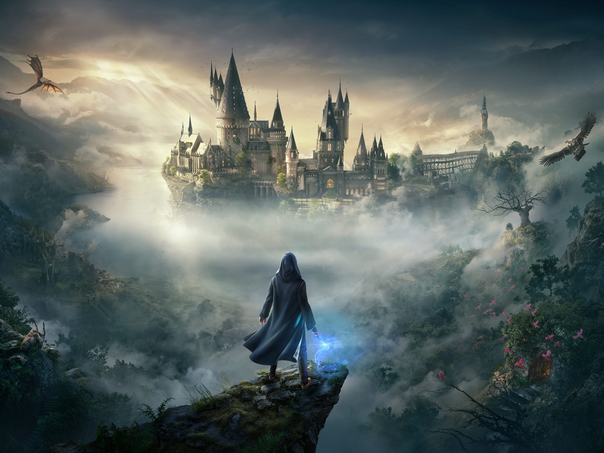
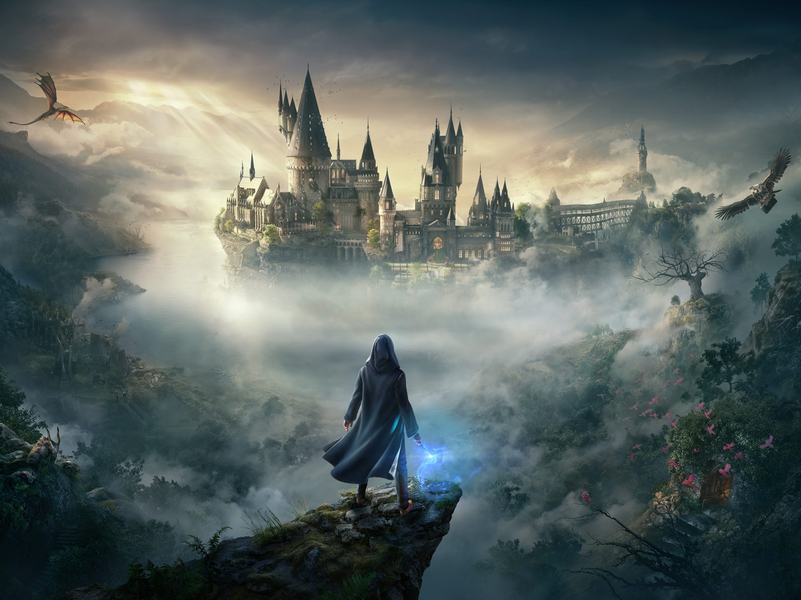
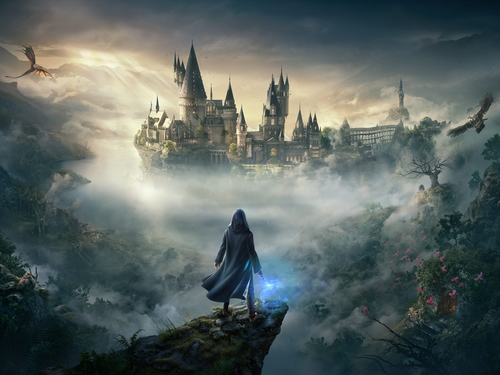
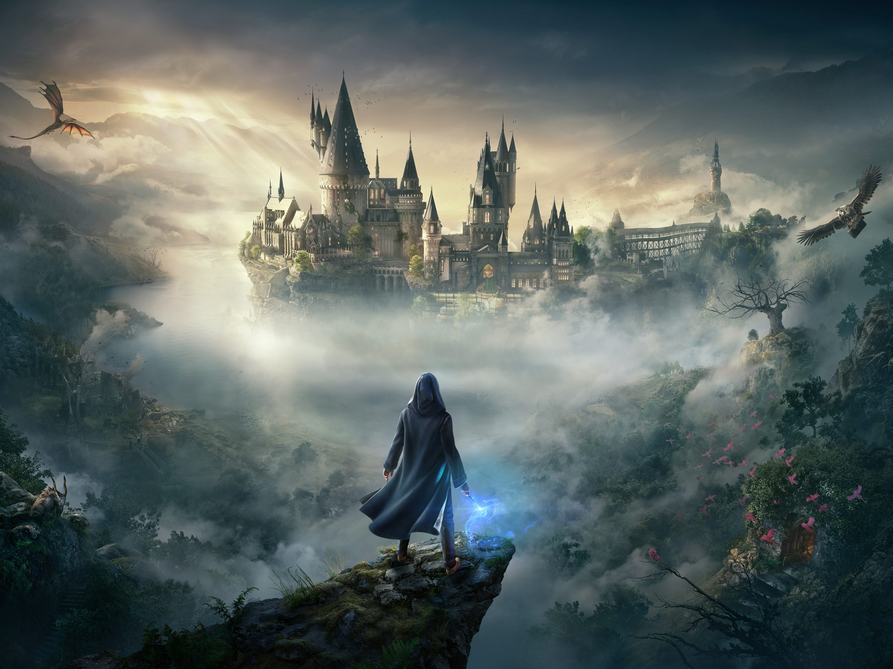

 

Hogwarts Legacy is an open-world single-player action-RPG. Players will be able to attend classes at Hogwarts School of Witchcraft and Wizardry including Charms, Defence Against the Dark Arts, Herbology, and Potions. Familiar locations from the Harry Potter franchise will be explorable such as the Forbidden Forest, Diagon Alley, and Hogsmeade Village. Other areas as yet unseen visually in other media include the Hufflepuff and Ravenclaw common rooms. Progressing through the game will see the interior and exterior of the castle change visually to match the seasons. The player character will learn to cast various magical spells, brew potions and master combat abilities. As players progress, they will be able to develop their own special combat style. Players can also acquire combat items, either through trading or crafting, which may be used to harm enemies or apply buffs to the player. Players will be able to tame, care for, and ride different magical beasts including hippogriffs and thestrals. Dragons, trolls, acromantulas, graphorns, mooncalves, fwoopers, kneazles, and nifflers are other interactable magical creatures. Some creatures can be used in combat such as use of the Mandrake to stun enemies.